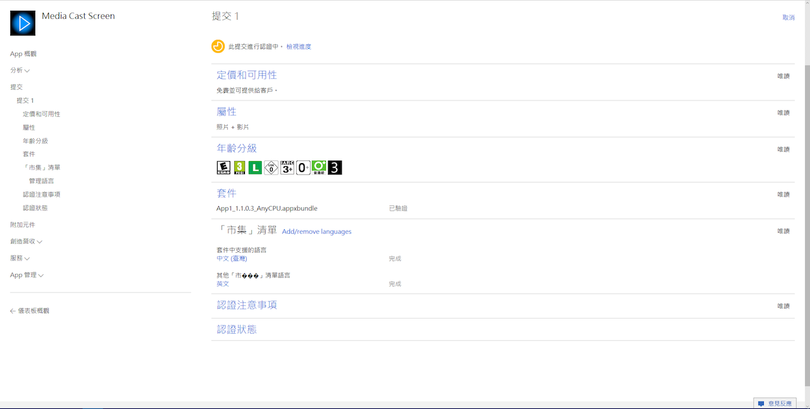
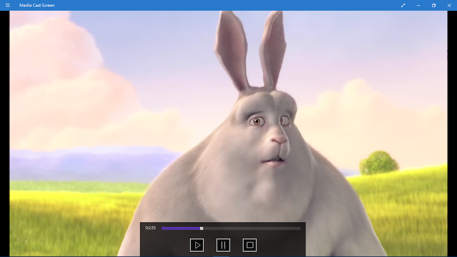

Article
by iisu
Twitter
Facebook
Snapchat
Instagram
Medium
第一次的上架
發布成功～～～～～感動！😊😊😊😊😊

執行畫面

早期拍的一部影片，當初介面還有些問題
問題:在winRT下取得電腦名稱
System.Environment.MachineName System.Security.Principal.WindowsIdentity.GetCurrent().Name.ToString(); string serverName = System.Windows.Forms.SystemInformation.ComputerName;
來自
https://social.msdn.microsoft.com/Forums/vstudio/en-US/d4a58414-cc38-43ba-b7ef-1578767a823d/how-to-get-the-computer-name-using-c?forum=csharpgeneral
解決:透過網路Domain的方法取得
using Windows.Networking; using Windows.Networking.Connectivity; IReadOnlyList<HostName> hostNames = NetworkInformation.GetHostNames(); HostName hostName = hostNames.FirstOrDefault(x => x.Type == HostNameType.DomainName); // Get Computer Name var hostNames = NetworkInformation.GetHostNames(); var localName = hostNames.FirstOrDefault(name => name.DisplayName.Contains(".local")); string computerName = localName.DisplayName.Replace(".local", "");
來自
https://social.msdn.microsoft.com/Forums/en-US/a58487ea-4a87-4374-bf39-3ec875f50d34/how-can-i-get-the-machinename-in-full-net-systemenvironmentmachinename?forum=winappswithcsharp
問題:連線中與中斷連線中似乎缺少實作函數來避免錯誤
問題:播放器控制器的顯示與隱藏並不是足夠完善
透過計數器完成隱藏與顯示問題
Menu
Contact Me
有任何問題或相關合作歡迎與我聯絡。
newland3798@gmail.com
(簡訊) (+886) 0981-969-787